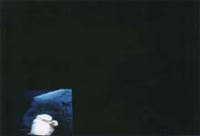
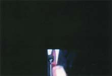

|
Video piece 1993
The private view of the exhibition fell on the evening of the US presidential election. A ten minute section of one of the US presidential debates of 1992 between Bush, Perot and Clinton was edited: the soundtrack was preserved, but the screen was blank for most of the time. When a candidate made a particularly florid movement while speaking, the gesture alone was preserved on screen (the area of the hands only, for the time of the gesture). |

 |